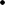
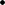
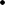
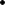
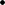
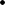
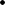

Other ad hoc methods are possible, but a professional portfo- lio manager will be dissatisfied with them despite their simplicity. Ultimately, a manager wants to quantify his or her risk versus the benchmark, something that simply is not possible with these other, rather amateurish mechanisms.
Stratification or stratified sampling is another simple way to build portfolios while maintaining a very rudimentary risk control mechanism. Stratified sampling was devised primarily for empiri- cal statisticians who wanted to understand the characteristics of a population but could not afford to gather observations on every member of the population. One method to create a representative sample of the population would be to randomly select members of the universe. While this method converges to the true mean and standard deviation of the population, we can improve on it by first stratifying the sample and then choosing a certain number of observations within each stratum.13
We assume that the portfolio manager already has predicted the excess returns of all the stocks in his or her universe. His or her goal is to choose the high- stocks while controlling risk versus the benchmark. The stratification method involves minimizing the exposures of the portfolio along many dimensions of risk. The first stage of stratification is to stratify the universe of stocks by divid- ing it into J nonoverlapping groups. We might want to stratify, for instance, by dividing the stocks into industry buckets so that each stratum represents a different industry. Call the number of stocks
in stratum j, Nj. The total stocks in the universe can be represented
j=1
j=1
j=1
by N. Thus J Nj = N.
The next step in stratified sampling with one subgroup classi- fication is to select representative stocks from each stratum. At this point the portfolio manager will have to decide how many stocks he or she wants in the portfolio. Let’s call this number NP. The idea

13 There really are two types of stratified sampling: proportional and disproportional. The one we describe here is proportional random sampling, in which the same proportion is chosen for the sample as is represented in the population.
Disproportional random sampling may overweight certain strata with respect to their size in the population for a variety of reasons that will not be discussed here.
of stratification is to select a proportion of stocks from each stratum that is representative of the universe of stocks. Thus, from each stratum, the portfolio manager should choose NjNP/N stocks. This value may need to be rounded to the nearest integer. In traditional stratified sampling, an index portfolio manager would select the stocks at random, which is a valid procedure for just replicating the
characteristics of the index. Beyond pure mimicry, though, a man- ager ought to maintain some risk controls while picking the high-
stocks. Thus, before making selections of stocks from each stratum, he or she should rank the stocks in each stratum accord- ing to aggregate Z-score, expected return, excess expected return, or and then choose the stocks with the highest values of the chosen criterion. For example, if the stock universe is divided into sectors and four stocks must be chosen from the transportaion sec- tor, those four stocks could be the ones with the highest relative ranking according to future risk-adjusted returns.
Of course, a portfolio manager might wish to create more than one subgroup classification to control risk. This can be accom- plished by dividing the universe of N stocks into a group of J cate- gories based on one classification and then dividing each group into subgroups, and so on and so forth. For example, to divide the universe of stocks into two subgroup classifications we could divide them by industry and then by size.
Figure 9.3 depicts the stratification of the universe of stocks into two subgroup classifications based on 9 industry groups and 3 size groups (large, medium, and small). With the stocks separated into 27 separate groups, or buckets, the manager ranks them
F I G U R E 9 . 3

The stratified-sample approach.
Industry
1 2 3 4 5 6 7 8 9





Large






Medium








Small